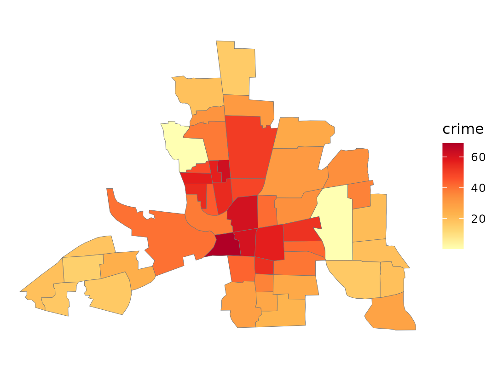
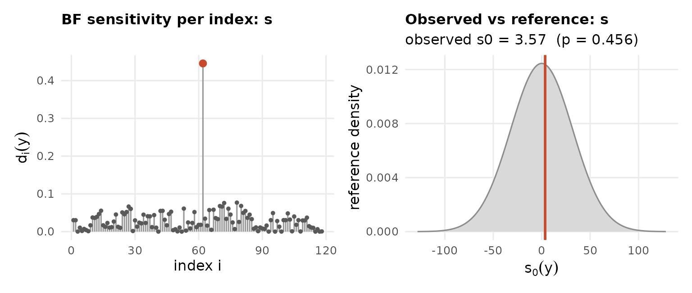
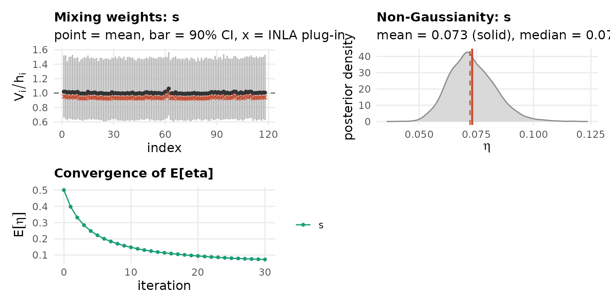

Residential burglary rates in 49 counties of Columbus, Ohio, come
with the spData package. Plot the response on the map
first:
library(sf); library(spdep)
map <- st_read(system.file("shapes/columbus.gpkg", package = "spData"), quiet = TRUE)
areal.plot(map, map$CRIME, title = "crime")
An intrinsic conditional autoregression (the besag
model) assumes neighbouring counties are similar, with Gaussian
differences across the edges of the adjacency graph,
The non-Gaussian version allows a few sharp boundaries between otherwise
smooth regions. Build the adjacency and fit the Gaussian model:
d <- st_drop_geometry(map[, c("CRIME", "HOVAL", "INC")])
d$s <- seq_len(nrow(d))
nb <- poly2nb(map)
Wadj <- Matrix::sparseMatrix(i = rep(seq_along(nb), lengths(nb)), j = unlist(nb), x = 1)
LGM <- inla(CRIME ~ 1 + HOVAL + INC +
f(s, model = "besag", graph = Wadj, scale.model = TRUE,
hyper = list(prec = list(prior = "loggamma", param = c(0.5, 0.01)))),
data = d, control.compute = list(config = TRUE))
LGM$summary.hyperpar
#> mean sd 0.025quant
#> Precision for the Gaussian observations 0.008022714 1.647426e-03 0.00519725
#> Precision for s 57.746536399 1.157551e+02 0.28549464
#> 0.5quant 0.975quant mode
#> Precision for the Gaussian observations 0.00788201 0.01165272 0.007641854
#> Precision for s 19.78290796 336.00659816 0.125463561
ng.check(LGM, compute.fixed = FALSE) # areal model auto-detected
The 118 edges of this graph all show a similarly small discrepancy
from the Gaussian reference. This field is essentially Gaussian, and
both the previous checking procedure (ng.check) and the
latent non-Gaussian fitting (ngvb) show that.
LnGM <- ngvb(LGM)
#> Components: s [car]
#> ngvb: reached the iteration limit after 30 iteration(s); E[eta] = 0.073
plot(LnGM)
bayes.factor(LnGM, n.samples = 30, seed = 1)
#> Bayes factor (non-Gaussian vs Gaussian): 1.09
#> log10 BF = 0.04 (weak/none)
#> weight ESS = 25.8 of 30 drawsThe intrinsic besag effect puts its mixing variables on the edges of the graph rather than on the counties, so they cannot be mapped directly. The simultaneous autoregression, built by hand in Custom models, places them on the counties instead and can be mapped.